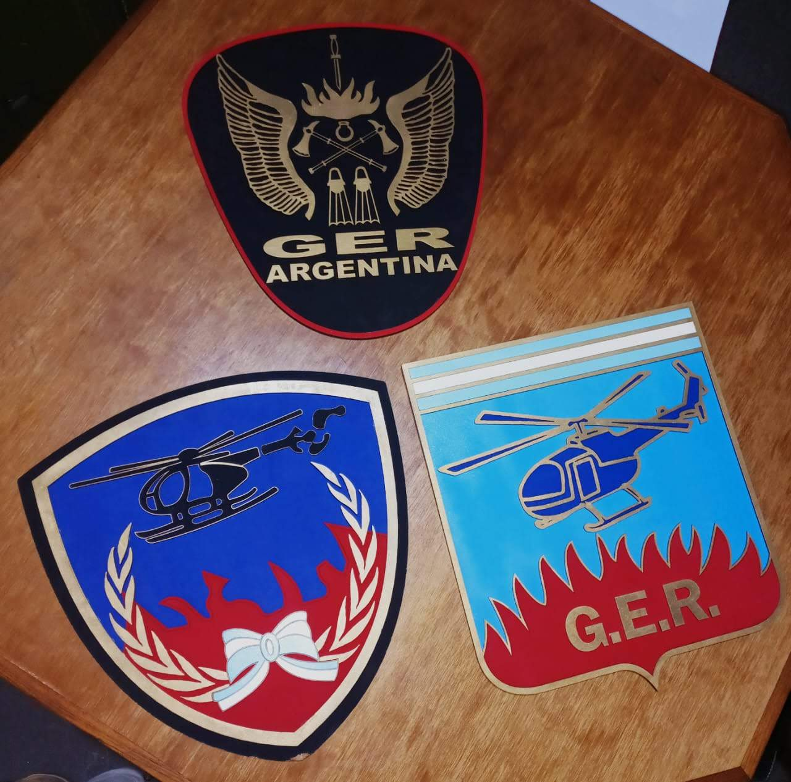

Historia del GER
A fines de la década de 1970 bomberos de la Policía Federal Argentina fueron enviados al Centro de Adiestramiento Policial Especial (CAPE), para recibir formación en rescate en altura, surgiendo los primeros operadores, inaugurándose, posteriormente, el Destacamento GER Caballito el 21 de junio de 1984.
Tipos de esculos que a tenido el GER a lo largo de su historia
Pioneros en su Época
Pioneros en su época el GER realizaba tareas de rescate en altura. Luego de su nacimiento a mediados de la década de los 80' no tardo en transformarse en el grupo élite de los Bomberos de la Policía Federal. A pesar de que actualmente el GER no depende de ningún cuerpo policial, sino que forma parte de los Bomberos de la Ciudad, siguen siendo el grupo élite del país en salvamento en altura.
Rapel de antiguos comandos del GER en el año 1990

Integrantes del primer curso del GER
Desde 2016, el GER pasó a formar parte de Bomberos de la Ciudad. Sus materiales y el recurso humano se integraron a la Brigada Especial de Rescate. Y actualmente desempeña sus labores de salvamento y rescate por cielo, agua y tierra en la Ciudad Autónoma de Buenos Aires.